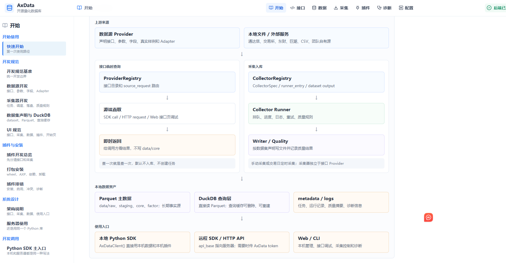
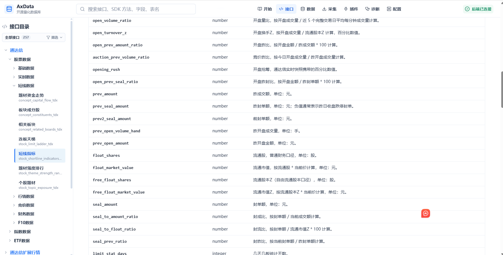
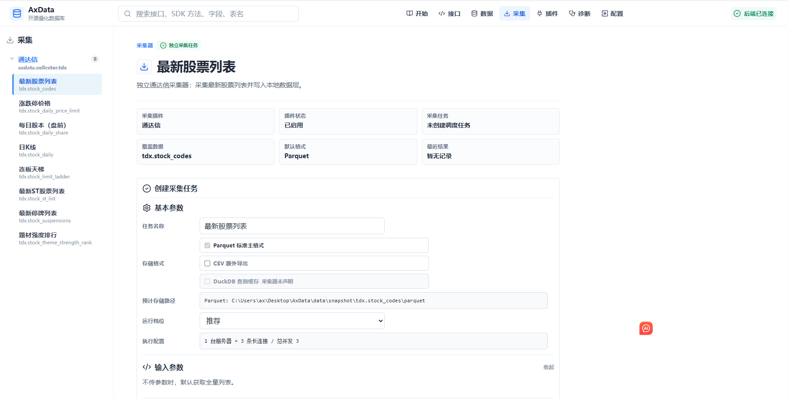
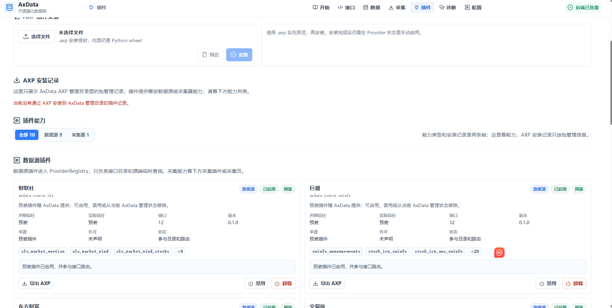

开源量化数据库框架
AxData
AxData 将数据源接口、采集任务、开放文件存储、本地查询、插件管理、Python SDK、HTTP API 和 Web 控制台放在同一个可扩展的数据平台里，面向个人量化研究、本地数据管理和数据源插件开发。
接口目录
文档站在构建时从 AxData Provider Registry 读取接口声明，并生成静态页面。打开 GitHub Pages 时不会请求 AxData 后端，也不会访问第三方数据源。
90通达信
31通达信扩展行情
3交易所
13东方财富
32巨潮
6腾讯财经
60新浪财经
12财联社
9开盘红
项目边界
数据源接口
Provider 插件负责一次性源端请求，返回 AxData 字段，默认不写入 data 目录。
采集器
Collector 插件负责显式采集任务、Parquet 写出、质量检查和元数据记录。
界面预览




致谢与声明
感谢 pytdx、AKShare、levistock 等开源项目为公开接口研究提供参考。AxData 仅用于个人学习、协议研究和非商业研究；通过本项目获取的数据禁止用于商业行为、付费服务、生产服务、转售或其他营利用途。
生成时间：2026-07-06T13:10:01+00:00